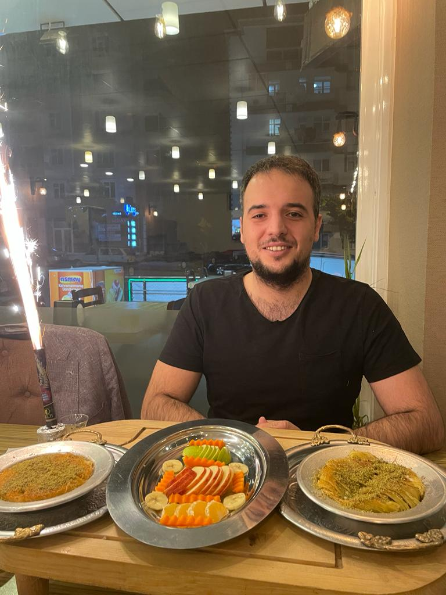
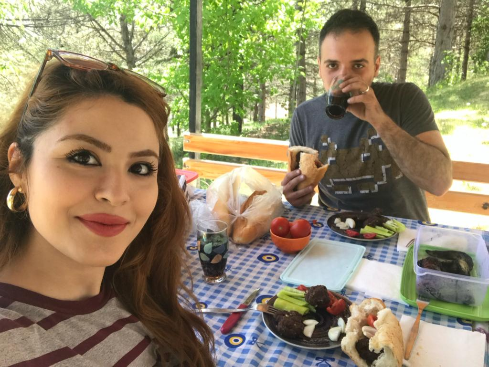
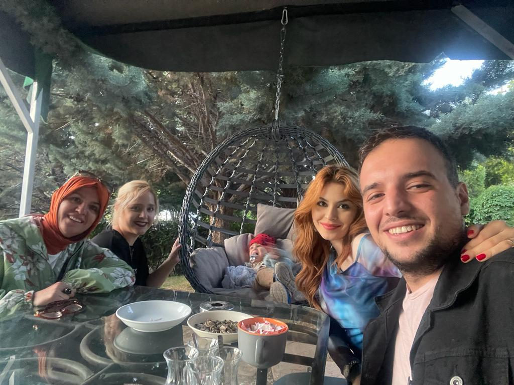

Hobi, yapılması zorunlu olmayan kişiye keyif veren ve eğlenceli saatler geçirmesini sağlayan aktivitelerin tamamına verilen isimdir. Yaş grubuna göre çeşitlenebilir ancak hepsinin temel amacı keyif vermesi ve hiçbir yaptırımın bulunmamasıdır.
1. Eşimle Yeni Yerler Keşfetmek
Küçüklüğümden beri meraklı bir insanımdır. Özellikle tarih ve doğaya bayılırım. Bunu eşimle birlikte yapmak ayrı bir keyif veriyor.
Meraklı olduğumun kanıtı :)
2.Yeni Tadlar
Yemek, bedenimize enerji katmanın ötesinde, bir kültürü, bir aileyi ve hatta bir tarihi temsil eder. Masanın etrafında toplandığımızda, sadece lezzetleri paylaşmakla kalmayız, aynı zamanda birbirimize zaman ayırmış, anılar oluşturmuş oluruz.
  3.Dizi Film İzlemek
.jpg)
Bir film izlerken, kahramanların sevinçleriyle güler, zorluklarıyla içlenir ve trajedilerine üzülürüm. Kısacası, bir film izlemek, duygusal bir deneyimdir. Bu deneyim, izleyiciyi sadece görsel bir şölene çekmekle kalmaz, aynı zamanda düşündürüp, etkiler ve iz bırakır.
4.Güzel insanlarla Kaliteli Sohbet etmek
Hayatın en değerli anları, etrafımızdaki güzel insanlarla paylaştığımız anlardır. Kaliteli bir sohbet, sadece kelimelerin bir araya gelmesinden çok daha fazlasını ifade eder. O an, içten gelen bir samimiyetle dolu, gülüşlerin, düşüncelerin ve duyguların özgürce paylaşıldığı bir anlam bütünlüğüdür.